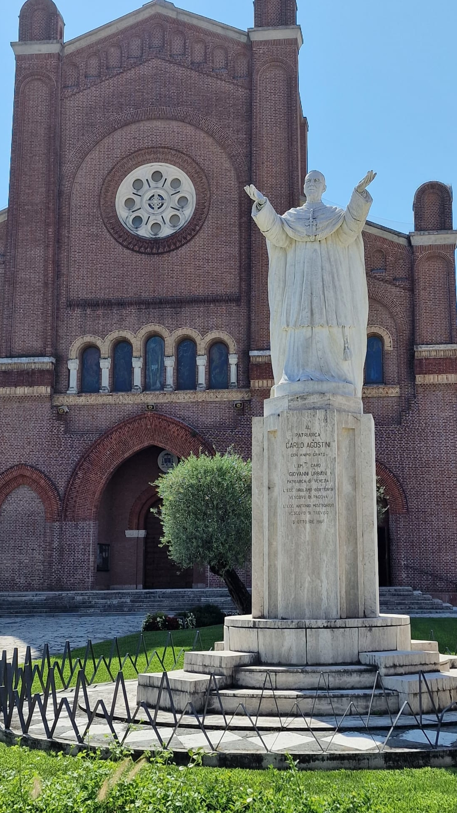

Su volontà del Monsignor Bernardi, nel 1925 venne definita la costruzione del nuovo Duomo di San Martino di Lupari. La costruzione si svolse in un tempo relativamente lungo, dovuto ai problemi economici dovuti alla crisi del 1929. La seguente ascesa del partito fascista non aiutò l’opera, ma alla fine nell’aprile del 1938 la chiesa fu inaugurata. Nel conteggio totale, si stima che all’epoca fosse stati spesi l’equivalente di oltre dieci milioni di euro attuali, senza considerare tutto il lavoro di manodopera gratuita fatto dai sammartinari, fieri di aver costruito una delle più belle e maestose chiese della provincia e della diocesi. La navata centrale è lunga 35 metri, e l’intera chiesa sfiora i 50, con una capienza di circa 5000 persone. Inizialmente la chiesa presentava delle vetrate che sono state di recente sostituite, al centro della facciata un grande rosone. All’interno le navate sono delimitate da colonne in pietra bianca e mattoni, sorreggono gli archi in mattoni a volta della navata centrale che contengono le finestre rotonde. Le due navate laterali terminano oltre il grande transetto, con delle cappelle, diametralmente opposte alle cappelline della facciata, tutte completamente decorate e contenenti vari altari. Ai lati del transetto gli altari dedicati alle reliquie. Da poco è stata completamente ristrutturata la cripta, dove sono stati ricavati gli spazi confessionali e un piccolo museo dove vengono custoditi i reperti più significativi di proprietà della parrocchia. L’intera costruzione, realizzata in mattoni rossi faccia a vista, conferisce un aspetto romanico all’edificio, che diviene imponente ancor di più all’interno. Il transetto ospita una balaustra con una gradinata dove si trova l’altare principale, e un’ulteriore gradinata per raggiungere il coro. L’altare termina con un’abside ribassata, decorata dal mosaico dorato del maestro Gatto, che accoglie lo spazio del coro e nasconde il retrocoro dove sono schermate le canne del grande organo e i vani accessori.
